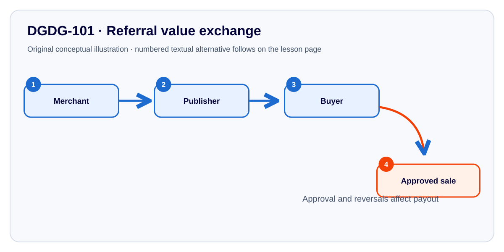

Affiliate Marketing Fundamentals
See the referral flow, calculate example commissions, challenge an ethical decision and practise with accessible controls.
Visual concept diagramInteractive calculatorDecision challengeLocal practice trackerHow a referral can create value

Explore the four stages below. The numbered written alternative makes all essential diagram information available without the SVG or script.
- Merchant supplies the actual product, fulfilment and customer terms.
- Publisher introduces an appropriate offer and discloses remuneration.
- Buyer independently evaluates the offer.
- Approved transactions may become payable under explicit commission conditions, including reversals.
Four lesson activities
- Roles and value exchange
- Customer journey and calculations
- Offer credibility review
- Disclosure and ethical review
Learn the concept
Affiliate marketing connects an advertiser, an independent publisher and a prospective buyer. A click is not a sale. Commission depends on the applicable terms and a qualifying, approved action. A refund may reverse a prior approval.
Why are earnings forecasts risky?
Conversion rates, refunds, offer quality, targeting, campaign spend and payout eligibility are uncertain. Any calculation here is a classroom simulation, not a projection of personal earnings.
Worked example
Five approved purchases for an eligible R900 course at 10% would be R450 before other conditions. One reversal reduces eligible sales to four, which is R360, assuming the programme reverses the refunded commission.
Formula: max(0, approved − reversed) × offer value × commission rate / 100.
Calculate a simulated net commission
Choose the more responsible approach
Choose an option for detailed feedback.
Explain the decision
What would you check before recommending a product? How would you explain the commercial relationship and what might cause a commission reversal?
Practice checklist and device settings
0 of 4 activities completed (practice only)
Not marked practised
Device saving is optional and off by default. Avoid typing personal/customer records on shared devices. This data does not synchronise with the Academy or create a certificate.
No data is saved unless you enable device saving.
Reference demonstration only. Integrate as enhancement to the existing four lessons, retaining source explanations, lab, assessment, toolkit and Academy navigation. This standalone prototype makes no authenticated or ISO certification claims.